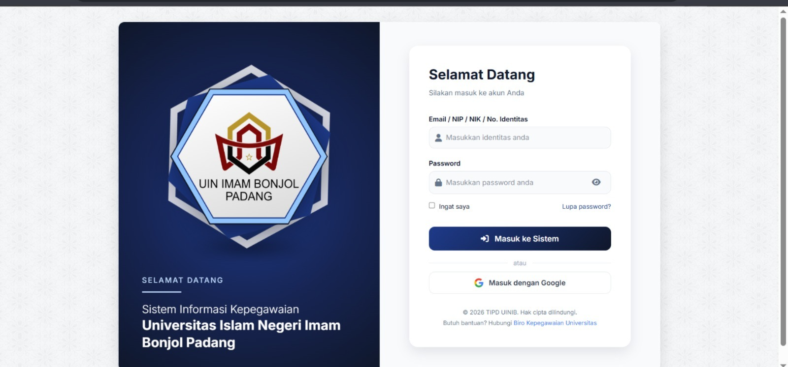
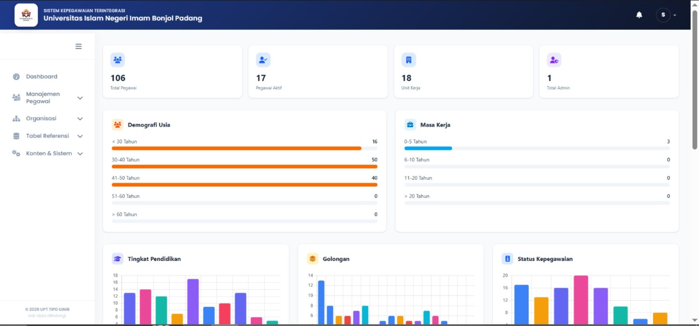
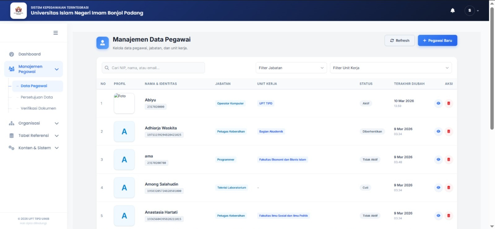
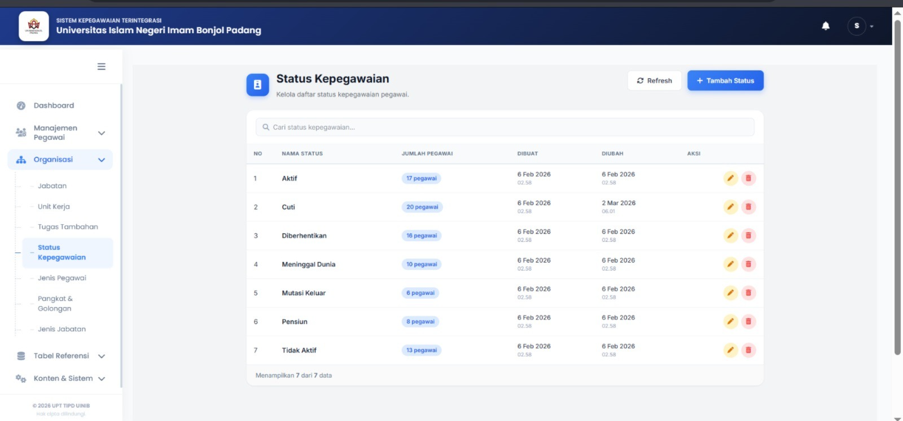
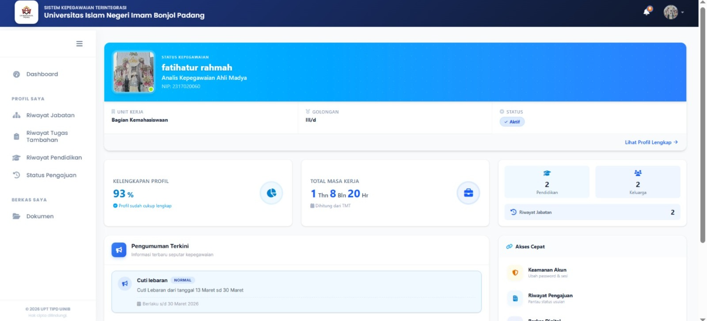

BACKEND
SIMPEG UIN Imam Bonjol Padang
Sistem informasi manajemen kepegawaian internal untuk mengelola data, dokumen, dan proses administrasi pegawai universitas.
Sistem terpusat untuk mendukung proses administrasi kepegawaian.

PROJECT OVERVIEW
Data kepegawaian dalam satu sistem.
Alur utama dan tampilan penting dari SIMPEG.

Halaman login
Autentikasi akun pegawai dan Super Admin.

Dashboard Super Admin
Ringkasan statistik pegawai dan organisasi.

Manajemen data pegawai
Pengelolaan data secara terpusat.

Data referensi kepegawaian
Pengelolaan data master organisasi.

Dashboard pegawai
Profil, dokumen, dan status pengajuan.
THE CHALLENGE
Pengelolaan kepegawaian internal membutuhkan sistem terpusat agar data pegawai, dokumen, dan pengajuan perubahan dapat dikelola lebih terstruktur.
MY CONTRIBUTION
Berperan sebagai Programmer Backend dengan mengembangkan modul, API, integrasi frontend Vue.js, dan optimalisasi performa sistem.